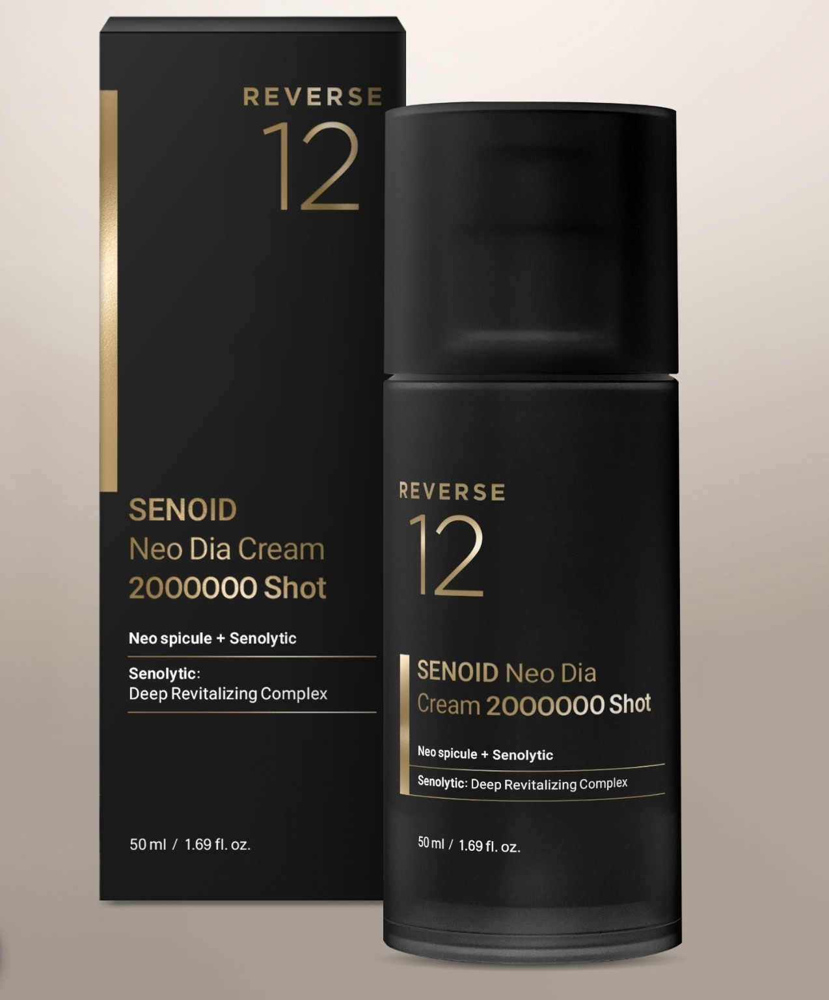
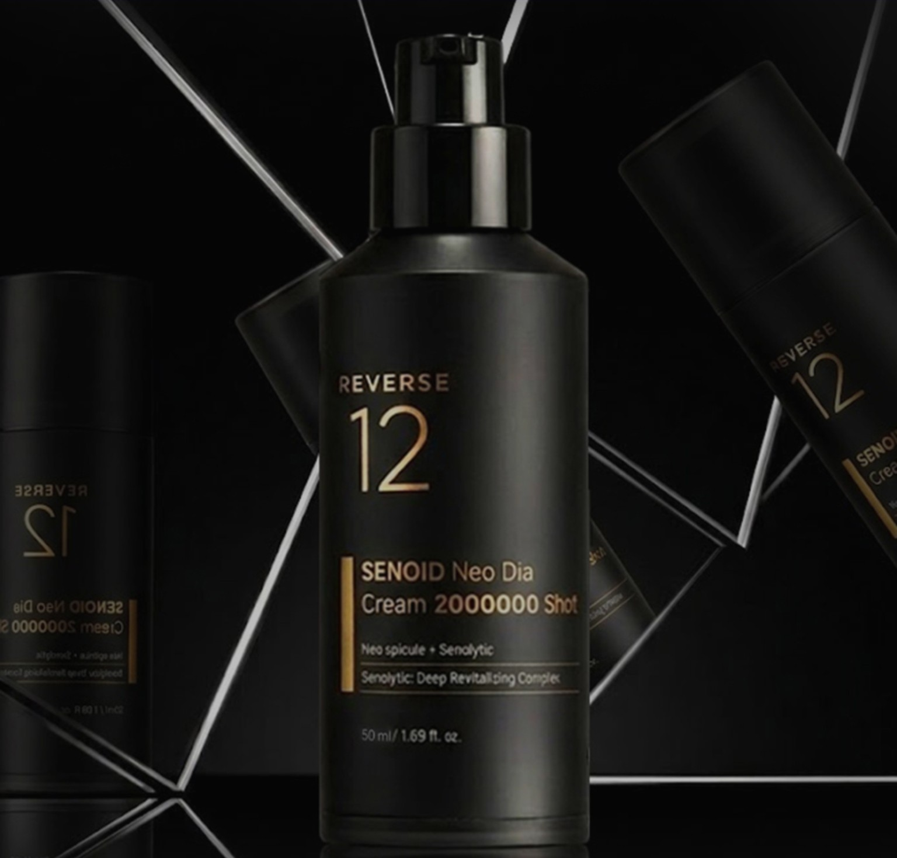
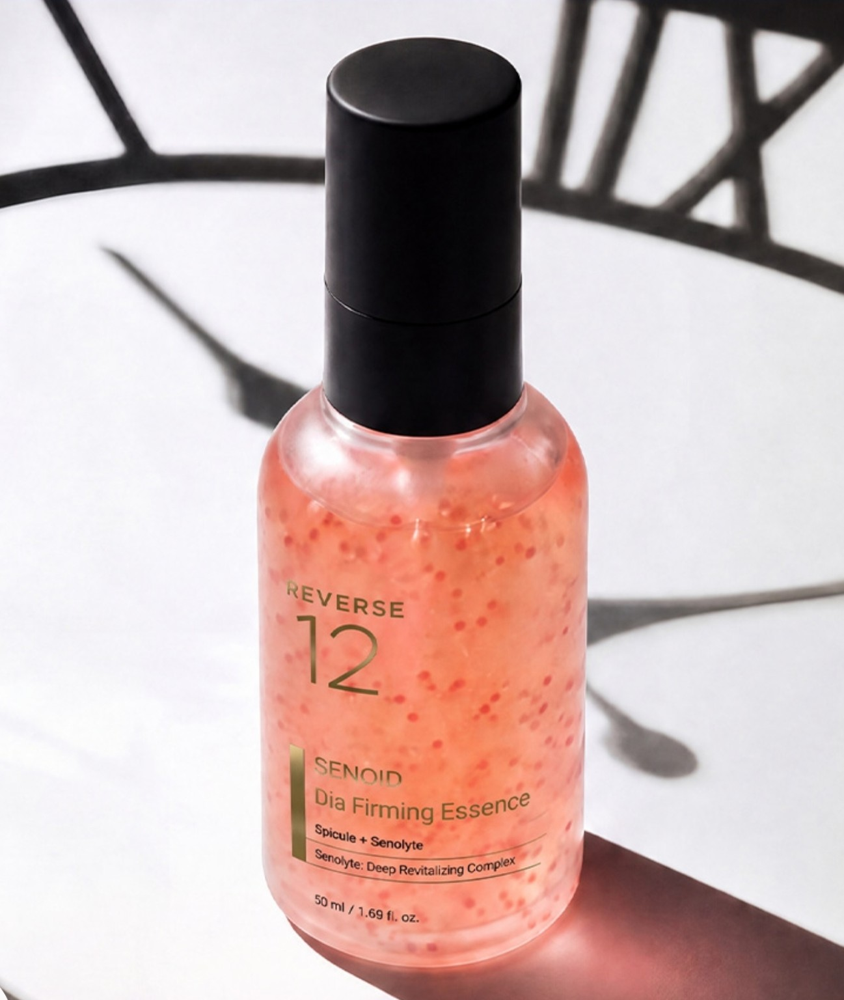
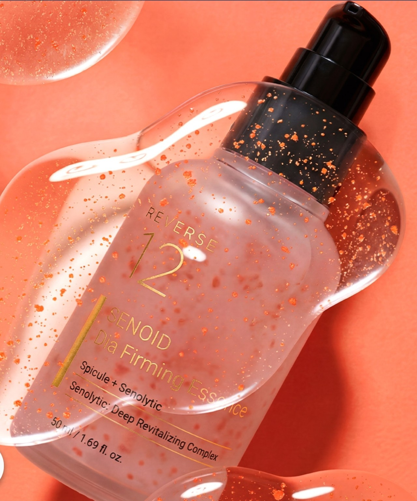
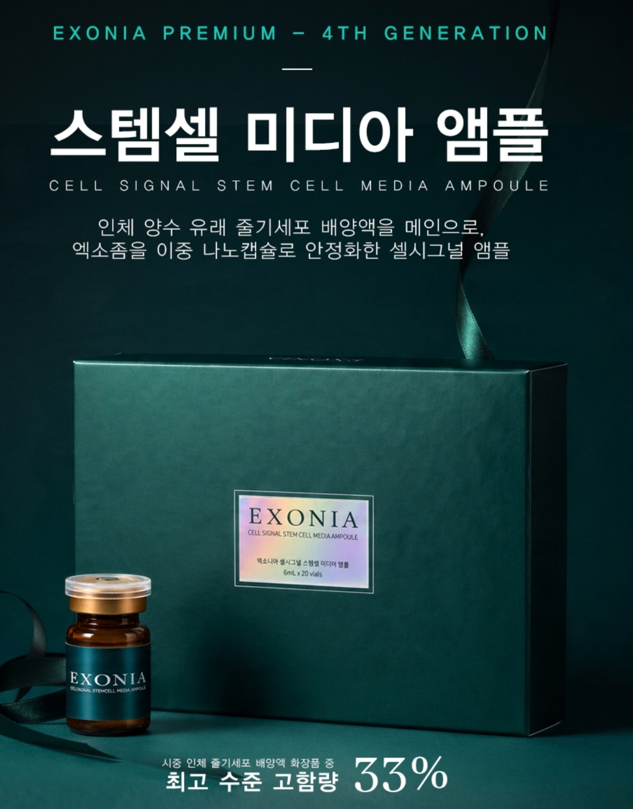
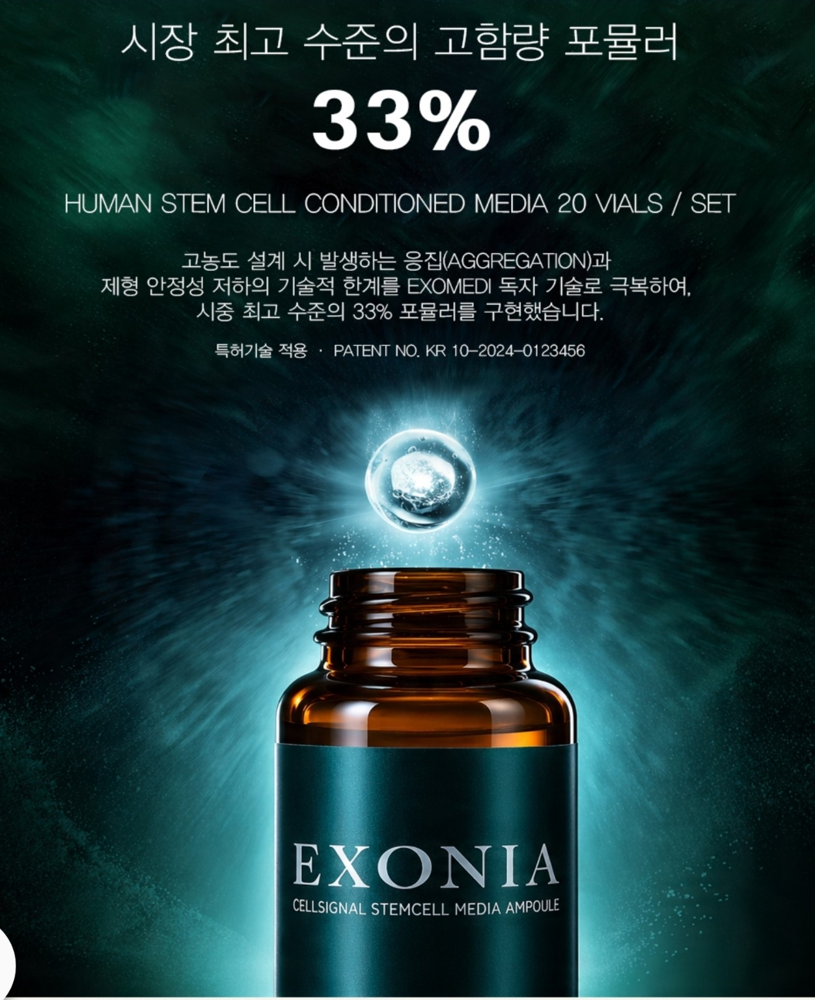
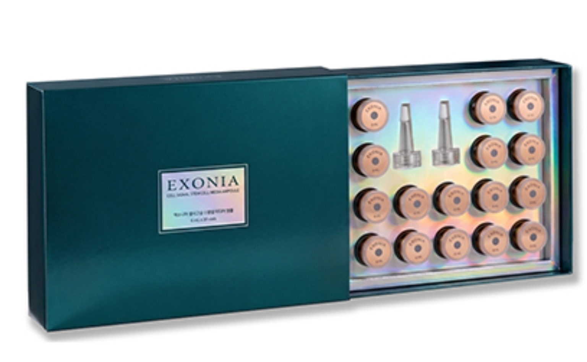

01
REVERSE12 · 50 ml
SENOID Neo Dia Cream
SENOID Neo Dia Cream
2,000,000 Shot
聚焦肤质、光泽、保湿与紧致感的一站式面霜。
SENOID™Neo Spicule
以SENOID衰老细胞护理、Neo Spicule传递技术与EXONIA细胞信号平台，呈现精密而高级的一站式肌肤方案。

REVERSE12关注肌肤老化环境、有效成分传递效率与水润光泽的整体平衡。我们将复杂的研究资料整理成清晰、可理解的护理路径。
皮肤环境SENOID™护理逻辑
精密传递Neo Spicule技术
再生信号EXONIA细胞信号平台
从日常弹力护理到高浓度专业安瓶，按肌肤状态选择。

01聚焦肤质、光泽、保湿与紧致感的一站式面霜。

02蕴含微细亮泽颗粒感的弹力精华，打造丰盈光泽。

03以PDRN、腺苷、肽类等护理概念，完成日常紧致节奏。

04以人体羊水来源干细胞培养液与双层纳米包裹概念构建的专业安瓶。
以原料特性、传递平台与可视化资料为基础，理解产品设计。
来源于槐树芽提取物的Senolytic原料概念，聚焦肌肤状态与环境平衡。
中空多孔二氧化硅杆状结构可搭载有效成分，并考虑与皮肤表面的密着传递。
通过两层包裹结构提高外泌体配方的稳定性、吸收效率与持续性。
围绕ECM细胞外基质与生长因子分泌资料，呈现肌肤结构护理研究。
以外泌体与培养液作为再生信号的传递媒介，构建新一代护肤叙事。
*细胞、ECM及CD63相关图像为原料层级或体外研究资料，不代表成品对人体的医疗或治疗功效。
依据所提供的人体适用试验资料，观察到毛孔、肌肤细密度、保湿、屏障及弹力相关指标的改善。
*试验机构、期间、人数及使用条件详见原始资料图片。结果可能因个人与使用环境而异。
人体羊水来源干细胞培养液为核心，以CRYPTOSOME™双层纳米包裹技术稳定化的专业护理方案。

所示人体干细胞培养液化妆品中的高含量配方概念
纯度、稳定性与生物活性维持
精密搭载与稳定传递
高品质功能性外泌体平台

建议零售价₩550,000
会员价₩330,000
MV120,000
*价格为所提供资料中的韩元参考信息，实际销售条件请另行确认。
点击图片可放大查看产品、技术与人体适用试验资料，并可按所选语言阅读图像说明。
可朗读当前部分，或用语音导航。